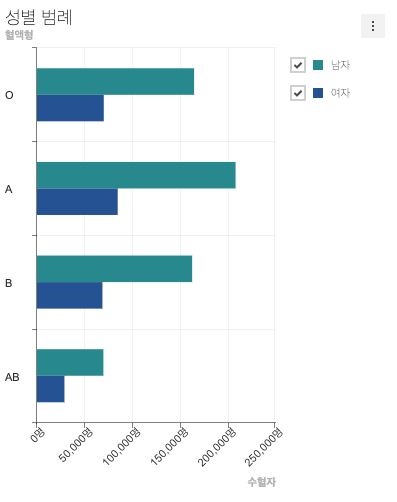

7. 바 차트에 추가 옵션 적용해보기¶
7.1. 바 차트의 x, y축에 타이틀 옵션 (xAxis.title, yAxis.title) 적용하기¶
아래와 같이 미리 작성된 옵션 위에 추가하여 x, y축에 타이틀을 표기해 봅시다.
// src/index.js
const barChartOptions = {
...
yAxis: {
title: '혈액형'
},
xAxis: {
title: '수혈자'
}
}
옵션에 대해 좀 더 궁금하다면 아래 위키 문서를 확인하세요.
7.2. 바 차트 x, y축 레이블에 suffix 옵션 적용하기¶
아래와 같이 앞에서 미리 작성된 옵션 위에 xAxis.suffix 옵션을 추가합니다.
// src/index.js
const barChartOptions = {
...
xAxis: {
title: '수혈자',
suffix: '명'
}
};
7.3. 바 차트에 테마 적용하기¶
아래와 같이 미리 작성된 옵션 위에 추가하여 새로운 테마를 적용해봅시다.
// src/index.js
const theme = {
series: {
colors: ['#289399', '#295ba0']
}
};
tuiChart.registerTheme('myTheme', theme);
const barChartOptions = {
...
theme: 'myTheme'
};
테마 적용에 대해 좀 더 궁금하다면 아래 위키 문서를 확인하세요.
7.4. 결과 확인¶
위 예제를 잘 따라 오셨을 경우 아래 이미지와 같은 형태의 바 차트가 만들어집니다.
